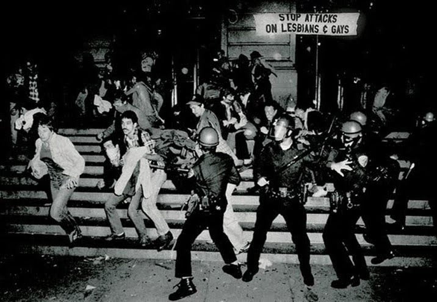

Introdução
Em 28 de junho de 1969, Stonewall Inn, Greenwich Village, Estados Unidos. A história começa nas primeiras horas da manhã, quando gays, lésbicas, travestis e drag queens enfrentam policiais e iniciam uma rebelião que lançaria as bases para o movimento pelos direitos LGBT nos Estados Unidos e no mundo. O episódio, conhecido como Stonewall Riot (Rebelião de Stonewall), teve duração de seis dias e foi uma resposta às ações arbitrárias da polícia, que rotineiramente promovia batidas e revistas humilhantes em bares gays de Nova Iorque.
Este episódio é considerado o marco zero do movimento LGBT contemporâneo e, por isso, é comemorado mundialmente em 28 de junho, Dia Internacional do Orgulho LGBT. Uma data para celebrar vitórias históricas, mas também para relembrar que ainda há um longo caminho a ser percorrido..
VIOLÊNCIA: UMA LINHA DO TEMPO
|  | Os primeiros registros históricos da homossexualidade datam de 1.200 A.C. Diversos pesquisadores e historiadores afirmam que a homossexualidade foi aceita em diversas civilizações ao longo da história. Apesar disso, em muitos países, gays, lésbicas, bissexuais, travestis e transexuais foram e ainda são constantemente violentados, presos, torturados e mortos, sem proteção das leis, que podem ser omissas, conter brechas ou até mesmo respaldar a violência contra essa comunidade. | O primeiro código penal contra a homossexualidade data do século XIII e pertenceu ao império de Gengis Khan, onde a sodomia era punida com a morte. No Ocidente, as primeiras leis anti-homossexuais, ambas redigidas sob influência da Inquisição, foram publicadas em 1533: o Buggery Act (Inglaterra) e o Código Penal de Portugal. A partir disso, leis anti-homossexuais se espalharam por diversos países do Ocidente que, por sua vez, as impuseram às suas colônias |
 |
Durante os últimos dois séculos, a violência, institucional ou não, continuou perseguindo os LGBTs: no nazismo, eles eram levados aos campos de concentração. Dois símbolos do movimento surgem aí: o triângulo rosa invertido, utilizado para identificar homens gays, e o triângulo preto invertido, destinado às “mulheres anti-sociais”, grupo que incluía as lésbicas. Teorias médicas e psicológicas tratavam a homossexualidade como uma doença mental que podia ser curada através de métodos de tortura, como a castração, a terapia de choque, a lobotomia e os estupros corretivos. | É importante frisar que essas violências não pertencem ao passado distante: até os anos 60, a homossexualidade ainda era ilegal em todos os estados dos EUA, com exceção de Illinois. Alan Turing, o pai da computação retratado no filme “O jogo da imitação”, foi quimicamente castrado sob ordens do governo inglês em 1952, por exemplo. Em diversos países, comunidades terapêuticas particulares continuam a oferecer serviços de “cura gay”. Ainda nesta década, a relação homossexual é crime em 73 países. Dessa lista, 13 nações preveem pena de morte como penalidade. No Brasil, de acordo com os dados de 2016 do Grupo Gay da Bahia (GBB), um LGBT é assassinado a cada 24 horas. Mas, como afirma o filósofo francês Michel Foucault, “onde há poder, há resistência”. |
 |
A rebelião de Stonewall teve uma série de consequências. No Livro “Stonewall: the riots that sparked the gay revolution”, o historiador David Carter afirma que há um amplo consenso de que foi essa rebelião que marcou o início do Gay Rights Movement (em tradução livre, movimento pelos direitos gays). Uma das consequências de Stonewall foi a criação de dois grupos que desempenharam um papel importante na história do movimento LGBT: o Gay Liberation Front (GLF) e o Gay Activists Alliance (GAA). | Não há consenso sobre qual episódio marca o início dos movimentos trans, mas a criação do periódico Transvestia: The Journal of the American Society for Equality in Dress, em 1952, é considerado por alguns o marco inicial dessa luta nos Estados Unidos. Além disso, travestis e transexuais (especialmente Sylvia Rae Rivera e Marsha P. Johnson) foram figuras-chave da Rebelião de Stonewall. |